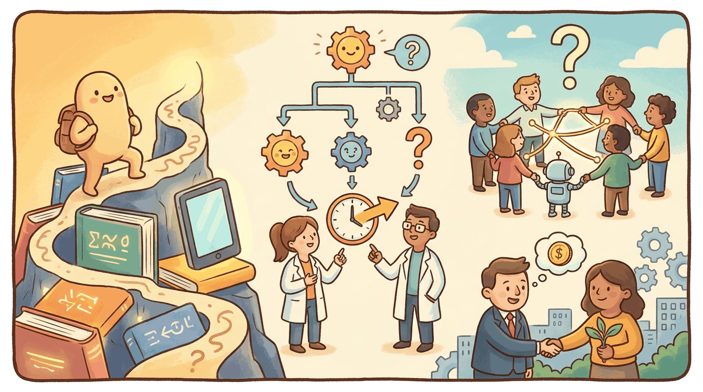

"Where are we on the curve? The honest answer is that the curve has more dimensions than the question assumes."
Author's notebook, January 2026
This chapter closes the book on the question every LLM textbook eventually has to address: when, if ever, do language models cross into something we would call general intelligence, and what happens to the world if they do. The 2025-26 evidence is unusually rich: Humanity's Last Exam is the first benchmark deliberately designed to outlast the next two scaling cycles, ARC-AGI-2 compressed the curve on which 2024 thought a major frontier-AI question would be settled, and FrontierMath Tier 4 introduced 50 problems that even leading 2026 reasoning models solve at roughly 29%. At the same time, Anthropic's labor-market study documented that 35.9% of U.S. workers used generative AI by Dec 2025 and 78.7% of measured AI interactions were augmentation rather than automation. Whether this is a slow-burn productivity story or a fast-burn displacement story is the question the next two years answer.
The benchmarks in this chapter are public and almost all expose evaluation harnesses:
pip install lm-eval # MMLU, GPQA, ARC, etc. via lm-evaluation-harness
git clone https://github.com/centerforaisafety/hle # Humanity's Last Exam
git clone https://github.com/arcprize/ARC-AGI-2 # ARC-AGI-2 task set
FrontierMath is held-out for security and not directly runnable; Epoch AI runs the official evaluation.
Sections in This Chapter
What Comes Next
This is the book's final main chapter. Chapter 65 wraps Part XII with the reading list, leaderboards, and community spaces where the open questions catalogued here will get answered first, before the capstone project sends you back to the agent you built earlier and asks what you would change today.